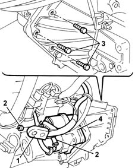
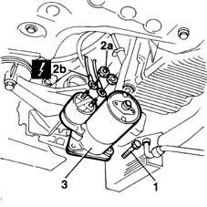

5520B12 starter motor - r+r for versions with a/c
- Path
- Procedures > 55 ELECTRICAL EQUIPMENT > 5520 ENGINE STARTING > 5520B starter motor and components > 5520B12 starter motor - r+r for versions with a/c
- Kind
- repair procedure (removal / refitting; the operation number is the code)
- Applies to
- all engines; all production periods
- Interactive page
- https://sloeber94.github.io/elrnDB-fMltpl/en/#/2891897
Applies to: engines: 1.6 16v; all production periods
 Removing
Removing
 Refitting
RefittingPosition the vehicle on a lift and raise it.
1. Open the protective cover for the starter motor wiring.
2. Disconnect the starter motor wiring.
 | Name | Connector |
|---|---|---|
2 | Starter motor |
Open the wiring retaining band.
3. Undo the bolts fixing the motor to the gearbox.
4. Remove the starter motor.

Applies to: engines: 1.6 16v; all production periods
Refitting
RemovingCheck that the starter motor is not damaged.
Position the starter motor on the gearbox and tighten the fixing bolts to the recommended torque.
 | Fastening | Component | Ø | Value (daNm) |
|---|---|---|---|---|
- | Bolt | STARTER SWITCH ASSEMBLY | M8 | 2.2 |
Connect the wiring to the starter motor.
Close the starter motor wiring protective cover.
Lower the vehicle and remove it from the lift.
Check the operation of the starter motor.
Applies to: engines: 1.9 JTD 8V; all production periods
Removing
RefittingPosition the vehicle on a lift and raise it.
1. Undo the bolts fixing the motor to the gearbox.
Open the starter motor wiring protective cover.
2. Undo the nuts (2a) and disconnect the starter motor electrical wiring (2b).
| Name | Connector |
|---|---|---|
2b | Starter motor |
Open the wiring retaining band.
3. Remove the starter motor.

Applies to: engines: 1.9 JTD 8V; all production periods
Refitting
RemovingCheck that the starter motor is not damaged.
Position the starter motor on the gearbox and tighten the fixing bolts to the recommended torque.
| Fastening | Component | Ø | Value (daNm) |
|---|---|---|---|---|
- | Bolt | STARTER SWITCH ASSEMBLY | M8 | 2.2 |
Connect the wiring to the starter motor.
Close the starter motor wiring protective cover.
Lower the vehicle and remove it from the lift.
Check the operation of the starter motor.